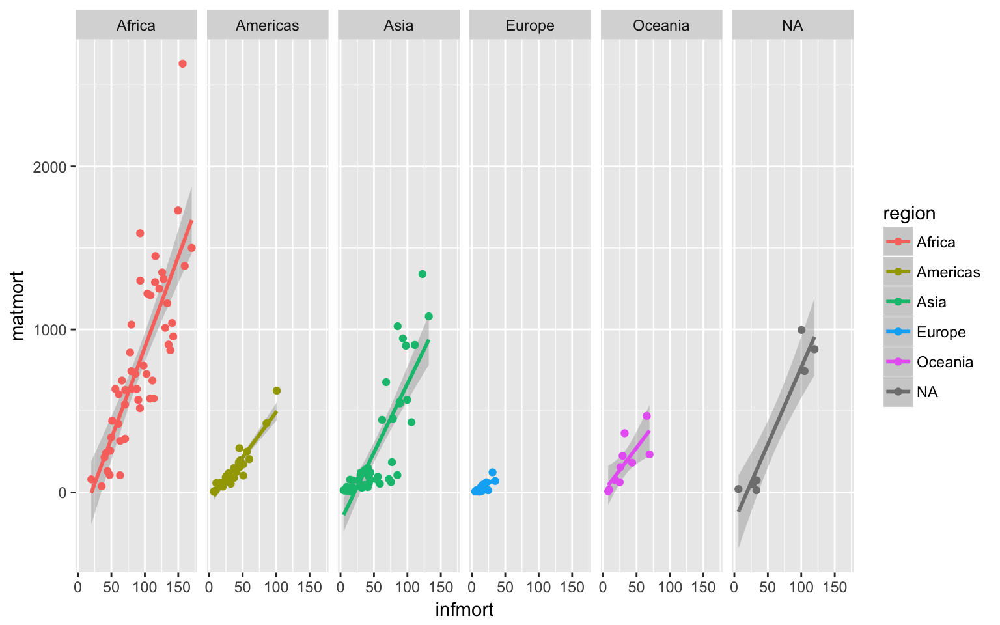

left_join()right_join()inner_join()full_join()bind_rows()bind_cols()semi_join()anti_join()intersect()union()setdiff()# libraries needed for these examples
library(tidyverse)All the joins have this basic syntax:
****_join(x, y, by = NULL, suffix = c(".x", ".y")
x = the first (left) tabley = the second (right) tableby = what columns to match on. If you leave this blank, it will match on all columns with the same names in the two tables.suffix = if columns have the same name in the two tables, but you aren’t joining by them, they get a suffix to make them unambiguous. This defaults to “.x” and “.y”, but you can change it to something more meaningful.First, we’ll create two small data tables.
subject has id, sex and age for subjects 1-5. Age and sex are missing for subject 3.
subject <- tibble(
id = seq(1,5),
sex = c("m", "m", NA, "f", "f"),
age = c(19, 22, NA, 19, 18)
)
subjectexp has subject id and the score from an experiment. Some subjects are missing, some completed twice, and some are not in the subject table.
exp <- tibble(
id = c(seq(2,6), seq(4,7)),
score = rnorm(9)
)
expA left_join keeps all the data from the first (left) table and joins anything that matches from the second (right) table. If there is more than one match for a row in the right table, there will be more than one row in the joined table (see ids 4 and 5).
left_join(subject, exp, by = "id")You can leave out the by argument if you’re matching on all of the columns with the same name, but it’s good parctice to always specify it so your code is robust to changes in the loaded data.
The order of tables is swapped here, so the result is all rows from the exp table joined to any matching rows from the subject table.
left_join(exp, subject)An inner_join returns all the rows that have a match in the other table.
inner_join(subject, exp, by = "id")A full_join lets you join up rows in two tables while keeping all of the information from both tables. If a row doesn’t have a match in the other table, the other table’s column values are set to NA.
full_join(subject, exp, by = "id")A semi_join returns all rows from the left table where there are matching values in the right table, keeping just columns from the left table.
Unlike an inner join, a semi join will never duplicate the rows in the left table if there is more than one maching row in the right table.
semi_join(subject, exp, by = "id")Order matters in a semi join.
semi_join(exp, subject, by = "id")A anti_join return all rows from the left table where there are not matching values in the right table, keeping just columns from the left table.
anti_join(subject, exp, by = "id")Order matters in an anti join.
anti_join(exp, subject, by = "id")You can combine the rows of two tables with bind_rows.
Here we’ll add subject data for subjects 6-9 and bind that to the original subject table.
new_subjects <- tibble(
id = seq(6, 9),
sex = c("m", "m", "f", "f"),
age = c(19, 16, 20, 19)
)
bind_rows(subject, new_subjects)The columns just have to have the same names, they don’t have to be in the same order. Any columns that differ between the two tables will just have NA values for entries from the other table.
If a row is duplicated between the two tables (like id 5 below), the row will also be duplicatedin the resulting table. If your tables have the exact same columns, you can use union() (see below) to avoid duplicates.
new_subjects <- tibble(
id = seq(5, 9),
age = c(18, 19, 16, 20, 19),
sex = c("f", "m", "m", "f", "f"),
new = c(1,2,3,4,5)
)
bind_rows(subject, new_subjects)You can merge two tables with the same number of rows using bind_cols. This is only useful if the two tables have their rows in the exact same order. The only advantage over a left join is when the tables don’t have any IDs to join by and you have to rely solely on their order.
new_info <- tibble(
new = rnorm(5)
)
bind_cols(subject, new_info)intersect() returns all rows in two tables that match exactly. The columns don’t have to be in the same order.
new_subjects <- tibble(
id = seq(4, 9),
age = c(19, 18, 19, 16, 20, 19),
sex = c("f", "f", "m", "m", "f", "f")
)
intersect(subject, new_subjects)union() returns all the rows from both tables, removing duplicate rows.
union(subject, new_subjects)setdiff returns rows that are in the first table, but not in the second table.
setdiff(subject, new_subjects)Order matters for setdiff.
setdiff(new_subjects, subject)These data and cleaning code are from Data cleaning
# load country data from a CSV file on the web
library(readxl)
ccodes <- read_csv("https://raw.githubusercontent.com/lukes/ISO-3166-Countries-with-Regional-Codes/master/all/all.csv")
infmort <- read_csv("data/infmort.csv") %>% # load infant mortality data from a CSV file
separate( # separate the stats column into its 3 parts
3,
c("rate", "ci_low", "ci_hi"),
extra = "drop",
sep = "(\\[|-|])",
convert = TRUE
)
matmort <- read_xls("data/matmort.xls") %>% # load maternal mortality data from an excel file
gather("Year", "stats", `1990`:`2015`) %>% # convert to long format
mutate(stats = gsub(" ", "", stats)) %>% # get rid of spaces in stats column
separate( # separate the stats column into its 3 parts
stats,
c("rate", "ci_low", "ci_hi"),
extra = "drop",
convert = TRUE
)inner_join(x, y, by = NULL, suffix = c(".x", ".y")
infmatmort <- inner_join(matmort, infmort, by = c("Country", "Year"))Error in inner_join_impl(x, y, by$x, by$y, suffix$x, suffix$y, check_na_matches(na_matches)) :
Can't join on 'Year' x 'Year' because of incompatible types (character / integer)Oops. Year is an integer type in infmort and a character type in matmort. We can fix that by adding convert = TRUE to the gather function.
matmort <- read_xls("data/matmort.xls") %>%
gather("Year", "stats", `1990`:`2015`, convert = TRUE) %>%
mutate(stats = gsub(" ", "", stats)) %>%
separate(
stats,
c("rate", "ci_low", "ci_hi"),
extra = "drop",
convert = TRUE
)
infmatmort <- inner_join(matmort, infmort, by = c("Country", "Year"))
glimpse(infmatmort)## Observations: 543
## Variables: 8
## $ Country <chr> "Afghanistan", "Albania", "Algeria", "Angola", "Argen...
## $ Year <int> 1990, 1990, 1990, 1990, 1990, 1990, 1990, 1990, 1990,...
## $ rate.x <int> 1340, 71, 216, 1160, 72, 58, 8, 8, 64, 46, 26, 569, 5...
## $ ci_low.x <int> 878, 58, 141, 627, 64, 51, 7, 7, 56, 34, 20, 446, 47,...
## $ ci_hi.x <int> 1950, 88, 327, 2020, 80, 65, 9, 10, 74, 61, 33, 715, ...
## $ rate.y <dbl> 122.5, 35.1, 39.7, 133.5, 24.4, 42.5, 7.6, 8.0, 75.5,...
## $ ci_low.y <dbl> 111.6, 31.3, 37.1, 119.9, 24.0, 39.0, 7.4, 7.8, 69.0,...
## $ ci_hi.y <dbl> 135.5, 39.2, 42.3, 151.0, 24.9, 46.4, 7.7, 8.2, 82.3,...suffixMaybe we shouldn’t have given the rates and CIs the same names in the infant and maternal mortality tables if we were going to join them. We could fix that by changing the names in the separate functions to be unique. Here, we’ll add the suffixes “_mat" and “_inf" to distinguish them.
infmatmort <- inner_join(
matmort,
infmort,
by = c("Country", "Year"),
suffix = c("_mat", "_inf")
)
glimpse(infmatmort)## Observations: 543
## Variables: 8
## $ Country <chr> "Afghanistan", "Albania", "Algeria", "Angola", "Arg...
## $ Year <int> 1990, 1990, 1990, 1990, 1990, 1990, 1990, 1990, 199...
## $ rate_mat <int> 1340, 71, 216, 1160, 72, 58, 8, 8, 64, 46, 26, 569,...
## $ ci_low_mat <int> 878, 58, 141, 627, 64, 51, 7, 7, 56, 34, 20, 446, 4...
## $ ci_hi_mat <int> 1950, 88, 327, 2020, 80, 65, 9, 10, 74, 61, 33, 715...
## $ rate_inf <dbl> 122.5, 35.1, 39.7, 133.5, 24.4, 42.5, 7.6, 8.0, 75....
## $ ci_low_inf <dbl> 111.6, 31.3, 37.1, 119.9, 24.0, 39.0, 7.4, 7.8, 69....
## $ ci_hi_inf <dbl> 135.5, 39.2, 42.3, 151.0, 24.9, 46.4, 7.7, 8.2, 82....full_join(x, y, by = NULL, suffix = c(".x", ".y")
A full join lets you join up rows in two tables while keeping all of the information from both tables. If a row doesn’t have a match in the other table, the other table’s column values are set to NA.
infmatmort <- full_join(
matmort,
infmort,
by = c("Country", "Year"),
suffix = c("_mat", "_inf")
)
infmatmort %>% filter(Country == "Djibouti", Year < 1993)left_join(x, y, by = NULL, suffix = c(".x", ".y")
Use a left_join() if you want to keep all the data in the main (x, left) table and join data from another (y, right) table if it exists.
Notice that the by argument now needs to specify both the left and right tables’ columns (by = c("Country" = "name")) because we’re joining on columns that have different names.
infmatmort_region <- infmatmort %>%
left_join(ccodes, by = c("Country" = "name"))
glimpse(infmatmort_region)## Observations: 5,044
## Variables: 16
## $ Country <chr> "Afghanistan", "Albania", "Algeria", "Angola...
## $ Year <int> 1990, 1990, 1990, 1990, 1990, 1990, 1990, 19...
## $ rate_mat <int> 1340, 71, 216, 1160, 72, 58, 8, 8, 64, 46, 2...
## $ ci_low_mat <int> 878, 58, 141, 627, 64, 51, 7, 7, 56, 34, 20,...
## $ ci_hi_mat <int> 1950, 88, 327, 2020, 80, 65, 9, 10, 74, 61, ...
## $ rate_inf <dbl> 122.5, 35.1, 39.7, 133.5, 24.4, 42.5, 7.6, 8...
## $ ci_low_inf <dbl> 111.6, 31.3, 37.1, 119.9, 24.0, 39.0, 7.4, 7...
## $ ci_hi_inf <dbl> 135.5, 39.2, 42.3, 151.0, 24.9, 46.4, 7.7, 8...
## $ `alpha-2` <chr> "AF", "AL", "DZ", "AO", "AR", "AM", "AU", "A...
## $ `alpha-3` <chr> "AFG", "ALB", "DZA", "AGO", "ARG", "ARM", "A...
## $ `country-code` <chr> "004", "008", "012", "024", "032", "051", "0...
## $ `iso_3166-2` <chr> "ISO 3166-2:AF", "ISO 3166-2:AL", "ISO 3166-...
## $ region <chr> "Asia", "Europe", "Africa", "Africa", "Ameri...
## $ `sub-region` <chr> "Southern Asia", "Southern Europe", "Norther...
## $ `region-code` <chr> "142", "150", "002", "002", "019", "142", "0...
## $ `sub-region-code` <chr> "034", "039", "015", "017", "005", "145", "0...right_join(x, y, by = NULL, suffix = c(".x", ".y")
We really just wanted the region, not all the extra data from the country codes. We can just select the columns we want when we load the country codes data.
If we start with the ccodes table, we can right_join() the infmatmort table, which is just the opposite of a left join (keeps all the data from the “right” joined table and any data from the “left” table that matches).
Remember to switch the order of the by columns if they have different names in the main and optional data tables.
infmatmort_region <- ccodes %>%
select(name, region) %>%
right_join(infmatmort, by = c("name" = "Country"))
glimpse(infmatmort_region)## Observations: 5,044
## Variables: 9
## $ name <chr> "Afghanistan", "Albania", "Algeria", "Angola", "Arg...
## $ region <chr> "Asia", "Europe", "Africa", "Africa", "Americas", "...
## $ Year <int> 1990, 1990, 1990, 1990, 1990, 1990, 1990, 1990, 199...
## $ rate_mat <int> 1340, 71, 216, 1160, 72, 58, 8, 8, 64, 46, 26, 569,...
## $ ci_low_mat <int> 878, 58, 141, 627, 64, 51, 7, 7, 56, 34, 20, 446, 4...
## $ ci_hi_mat <int> 1950, 88, 327, 2020, 80, 65, 9, 10, 74, 61, 33, 715...
## $ rate_inf <dbl> 122.5, 35.1, 39.7, 133.5, 24.4, 42.5, 7.6, 8.0, 75....
## $ ci_low_inf <dbl> 111.6, 31.3, 37.1, 119.9, 24.0, 39.0, 7.4, 7.8, 69....
## $ ci_hi_inf <dbl> 135.5, 39.2, 42.3, 151.0, 24.9, 46.4, 7.7, 8.2, 82....So let’s make a graph that we couldn’t have easily made with 3 separate data tables
infmatmort_region %>%
filter(Year == 1990) %>%
group_by(name, region) %>%
summarise(
matmort = mean(rate_mat),
infmort = mean(rate_inf)
) %>%
ggplot(aes(infmort, matmort, colour = region)) +
geom_smooth(method = "lm") +
geom_point() +
facet_grid(.~region)
Load data from disgust.csv, personality.csv and users.csv. Each participant is identified by a unique user_id.
Remember to check the col_types if you get warnings when loading datasets.
Add participant data to the disgust table.
disgust <- read_csv("data/disgust.csv")
ocean <- read_csv("data/personality.csv")
user <- read_csv("data/users.csv",
col_types = list(
col_integer(),
col_character(),
col_character()
)
)
study <- left_join(disgust, user, by = "user_id")Add the participant data to the disgust data, but have the columns from the participant table first.
study <- right_join(user, disgust, by = "user_id")Create a table with only disgust and personality data from the same user_id collected on the same date.
study <- inner_join(disgust, ocean, by = c("user_id", "date"))Create a table of the disgust and personality data with each user_id:date on a single row, containing all of the data from both tables.
study <- full_join(disgust, ocean, by = c("user_id", "date"))Create a table of just the data from the disgust table for users who completed the personality questionnaire that same day.
study <- semi_join(disgust, ocean, by = c("user_id", "date"))Create a table of data from users who did not complete either the personality questionnaire or the disgust questionnaire. (Hint: this will require two steps; use pipes.)
study <- user %>%
anti_join(ocean, by = "user_id") %>%
anti_join(disgust, by = "user_id")Load new user data from users2.csv. Bind them into a single table.
user2 <- read_csv("data/users2.csv",
col_types = list(
col_integer(),
col_character(),
col_character()
)
)
users_all <- bind_rows(user, user2)How many users are in both the first and second user table?
intersect(user, user2) %>% nrow()## [1] 11602How many unique users are there in total across the first and second user tables?
union(user, user2) %>% nrow()## [1] 100441How many users are in the first, but not the second, user table?
setdiff(user, user2) %>% nrow()## [1] 40441How many users are in the second, but not the first, user table?
setdiff(user2, user) %>% nrow()## [1] 48398